Google - Customer story
Contents
Google - Customer story#
How do Pokemon Go scale to millions of request#
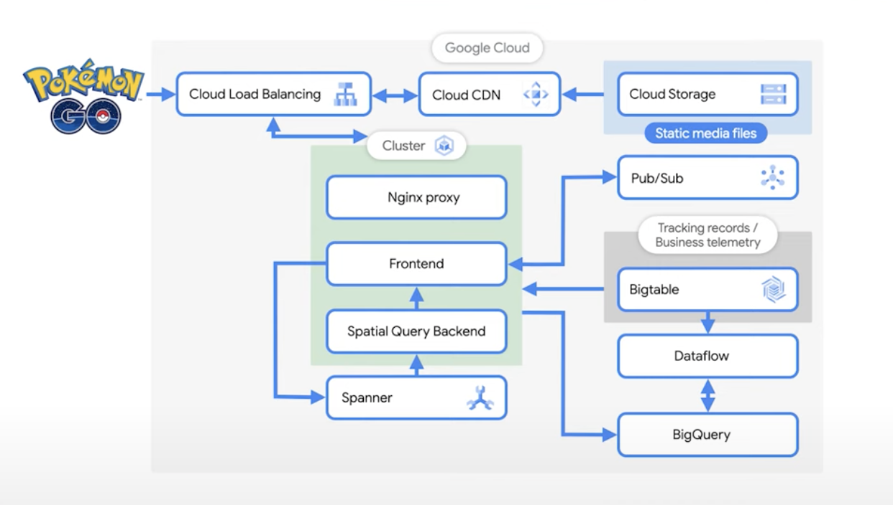How does Pokemon scale?#
uses Google cloud - Google Kubernetes Engine and Spanner
front end service hosted on GKE, as it is easy to scale
uses 5000 spanner nodes to handle traffic
uses 1000 GKE nodes just for Pokemon Go service
uses microservices for gaming augmentations
millions of players play the same game at any given moment, unlike other multiplayer games like “World of Warcraft” which split players into multiple realms
Was the architecture always the same?#
starting off, it started on Google Data Store
later it decided to scale
Spanner was a choice, as it has consistent indexing that allows to do more complex database schemas with primary and secondary keys
Data store was also non-relational with atomic and durable transactions
requirement was to have a relational database with full consistency, so Spanner was chosen, which provided global ACID transactions
How does the request flow work when one logs into Pokemon Go?#
when a user catches a Pokemon, a request is received through Google Cloud load balancer
all static media is stored on Google cloud storage bucket, which is downloaded onto the phone when the app is opened on phone
the load balancers are cached and served through Google cloud SDN
when a player catches the Pokemon, the GCLB sends a request to GKE cluster
there is a front end service that sits behind a Nginx reverse proxy
the request goes from user phone to reverse proxy to one of these player front end services
there is a spatial query backend, which a cache by location, which stores information that determines
where a Pokemon is shown on map,
where are the gyms
where are the Pokestops around,
what is the timezone or any other feature locationwise
the front end manages the player and their interaction with the game
the spatial query backend handles the map
the front end retrieves the information from the squibby to send back to the user
the spatial query is a custom database that presents the map and the Pokemons
What happens when a Pokemon is hunted and caught?#
a request is sent from the front end to the Spanner database where player entity is stored in the store
if someone is battling in the gym or adding lures enhancing Pokestop, that information is stored on spatial query backend
eventually the data gets consistent, at which point the player will receive the update and then other players in the vicinity will get update as well
the front end then will retrieve the information from the spatial query backend and send it back to the user
this information is also stored using protobuf into Bigtable
Bigtable is also used for logging and tracking purposes
Pub/Sub is also used to send topic which is then used for analytics pipeline
How is it ensured that two people in the same geographic location, see the same Pokemon data and keep that relatively in sync, especially during the events?#
everything in the servers are deterministic
if they are in same locations, both the players will get returned the same details
this is achieved using caching which manages precise timing especially when the settings are changed and they need to be in sync across all servers
How does the data pipelines work and what analytics happen?#
about 10G of data is generated daily and stored in BigQuery
this data is utilized by data science team
this is used for marketing purposes, for verification
Dataflow is used to run batch jobs to process the player logs sitting in Bigtable
this is used for cheat detection
a player in Japan and a minute later they were in Australia
check for such logs and respond to improper player signals
Google Dataflow is also used to set up Pokestops and gyms and habitat information around the world
information from various sources are used, like OpenStreetMap, US Geological survey and WayFarer, a crowdsourced website, for players to submit points of interests in their neighborhood and combine all that information to build a living map of the world
As the traffic grows during events, how does the data pipelines scale?#
with the increase of transactions in pipelines, is managed by BigQuery
BigQuery’s serverless architecture decouples storage and compute and allows them to scale independently on demand
scaling works premptively on Google cloud to support the traffic
How is the health of the system monitored during these massive events?#
multiple monitoring systems like Prometheus, Grafana, and Google Cloud Monitoring is used
What are the next plans?#
exploring Agones and Google Game Servers
References#
How does Uber scale to millions of concurrent requests#
Uber Request Flow#
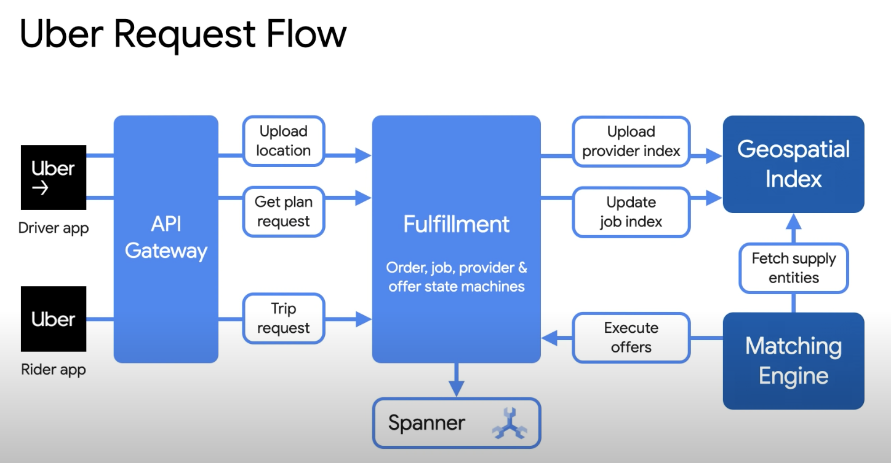Fulfillment platform
goes through series of checks and balances and then triggers fulfillment to create new order for consumer
order is the intent of consumer
intent is then translated into jobs that needs to be processed
this information is stored in spanner
these jobs are read by matching engine
offered to any open provider or supplier nearby
earlier all of this data was saved in on-prem database and recently moved to Spanner
Challenges with on-prem database
No-SQL storage engine Cassandra was used to save all real time fulfillment entities
to maintain serializability on top of Cassandra, Ringpop was used to provide individual entity-level serialization
Challenges with NoSQL
Cassandra follows the principle of eventual consistency
there is no guarantee of low-latency quorum writes with Cassandra
witnessed complex storage interactions that required multi-row and multi-table writes.
to tackle this, an application layer framework was build to orchestrate this operation using saga pattern
these inconsistencies had to be manually corrected
in real world - two different drivers are dispatched to a customer
Horizontal scaling bottlenecks were observed in overall architecture
this was primarily because how application layer was sharded with Ringpop
properties of traditional SQL-based storage ACID guarantees were observed
consistency was the primary requirement
NoSQL requirements with strong ACID guarantees were needed
Google Spanner was the solution
what were the explorations for transitioning from NoSQL to NewSQL
Consistency with high resilency and availability were the requirement criterias
CockroachDB, FoundationDB and Cloud Spanner were considered
functional requirements were fulfilled
scaled horizontally with our benchmarks, and provided a managed solution for cluster management and maintenance
what is the new architecture
every user request results in a transaction against one or more rows and across one or more tables in cloud Spanner
consistent view of data is available both to internal and external customers
Uber Fulfillment Architecture#
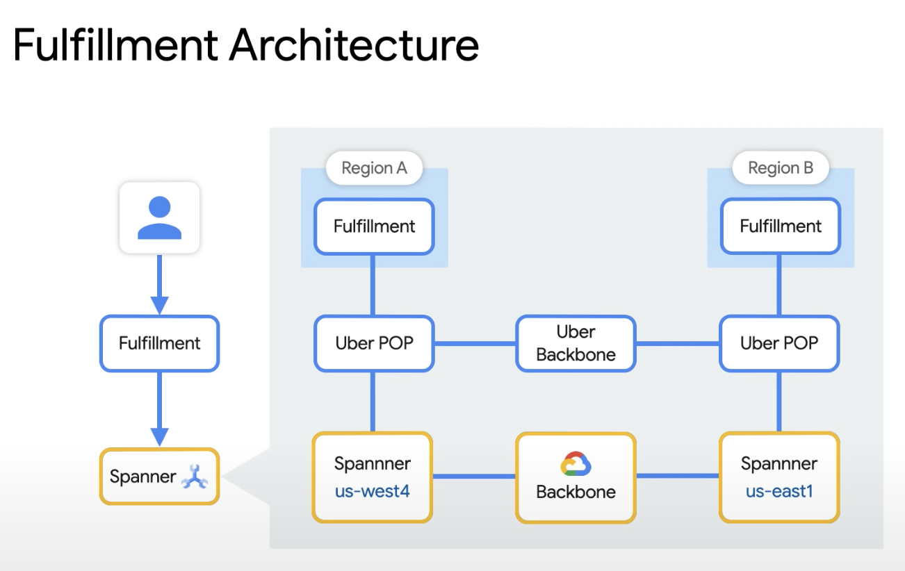latency is the biggest factor, what is the networking architecture looks like
resilient and highly reliable infrastructure to support Uber’s workload
networking infrastructure was divided into 2 major components
physical layer consisting of interconnections between Uber and Cloud vendors
logical layer consisting of virtual connections on top of physical layer to achieve redundancy
this is achieved by making multiple routers and having local access points at each physical network route
leverage Google’s private Google access to route using cloud interconnect VLAN attachments
reduced the need of routing traffic through public internet and provided additional reliability
benchmarking tests were designed
Uber Low Latency Cloud Architecture#
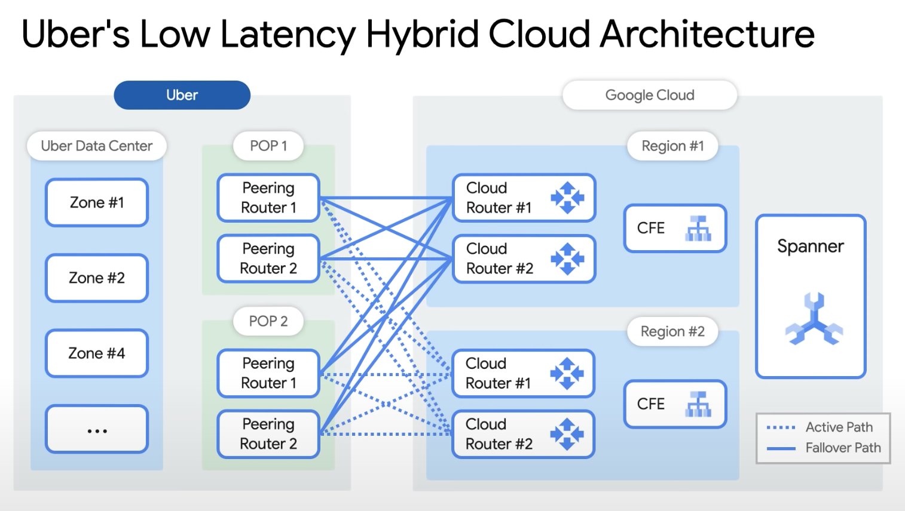how was the migration and transition made seemless
database topology was significant different from old platform, any kind of live migration of data was ruled out
most of the data is ephemeral and changing continuously, backups would have resulted in loss of data
systems were built that will intercept request from user session and attach to the new user session
till the past order is not complete, this migration is not done
only open user session with no active orders were migrated to new architecture
tooling were tested rigorously in testing, staging and shadow environments
test cities were developed to check migrations with one city at a time
continuously migrate over 6 month period
Performance Optimization
networking stack
TCP Reset
the spanner session needs to be re-established for the forwarded requests
by optimizing gRPC channel pool whenever a channel is affected by TCP resets, requests are automatically forwarded temporarily to backup empty gRPC channel
Intermittent packet loss
with frequent health checks, broken TCP connections can be detected within 5 sec and graceful connections can be triggered
To take advantage of cloud Spanner elasticity, autoscaler was built
constantly tunes the number of nodes based on CPU utilization target
as traffic is variable based on constant CPU utilization target, maximum elasticity is achieved from Cloud spanner cluster
Uber Auto scaler#
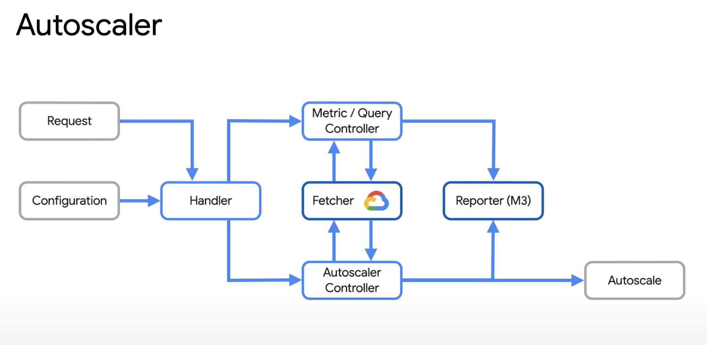On-prem cache was made to handle workload which is very read-heavy
improves latency and cost
only route stale reads to Spanner
allow cache to serve snapshot isolation based on Spanner’s queue time
Uber On-prem Cache#
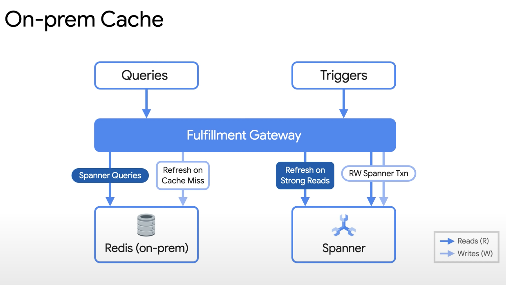READ#
“How Ringpop from Uber Engineering helps distribute your application”
Saga pattern - in microservices architecture it tracks all events of distributed transactions as a sequence and decides the rollbacks events in case of a failure
Planet scale
Strong read and Stale read
How to create a microservice architecture with Google Cloud - Nylas#
Legacy Architecture#
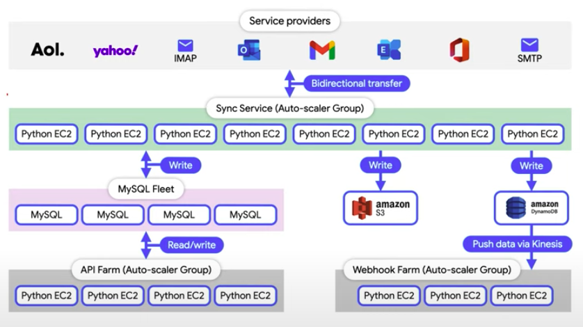Workflow Automation
by collecting data from multiple applications
compiling insights
create end-to-end automation workflow
handle communication data driving business process automation
Problems to tackle
security
scalability
performance
cost
Why Google Cloud
best distributed technology
GKE - Google Kubernetes Engine is the best cloud provider to run Kubernetes workload securely at scale
one of the most performant data stores in Spanner
Architecture
the advantage of using GKE is its ability to handle the container orchestration, Cloud Pub/Sub for message bus and Cloud Spanner for relational data store
Spanner processes 1B requests per second at peak
latency of less than 7 milliseconds
GCP services are very robust
Transition
from Python based application to Go - code rewrite
services were rewritten in Go
10x throughput improvement was observed
move from virtual machine instances on AWS EC2 to GKE
move the orchestration from AWS autoscaler group to GKE
GKE was used to orchestrate containers
due to security reasons, nodes have to be cycled very quickly
were able to have upto 15000 nodes in Kubernetes cluster
other cloud providers dont provide this level of support
gVisor is used to run containers to create strong isolation between application and operating system
helps lock down host memory and storage access and enforce least permission principle at operating system level
gVisor is an application kernel, written in Go, that implements substantial portion of Linux system call interface. It provides an additional layer of isolation between running applications and host operating system
20TB of data processing in MySQL shards
Cloud spanner was used to keep application states
store keys for each accounts that needs to be connected
fast read/write is extremely critical for large number of calls
high performance to have predictable end-to-end latency
Current Architecture#
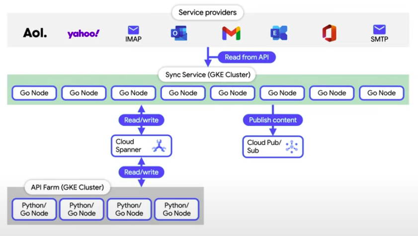PII(Personally Identifiable Information)
Nylas does not have to hold PII
for security services
Migrated from database centric design to event based design
message bus is the heart of all application
to make this transition, Google Pub/Sub was choosen
Google Pub/Sub allows services to communicate asynchronously with latencies on the order of 100 milliseconds
in legacy AWS architecture which was more of data driven architecture
the data is written into Dynamo
then gets converted by lambda function
then goes to Kinesis event stream
in new architecture, this is simplified
event it first
rewrote it directly on Google Pub/Sub
puts lot of strain on system, with trust that this will get scale and perform reliably and consistently
on Google Pub/Sub, the performance latency is minimal
event bus can act as data store
Benefits of migrating
30 times performance on each node was observed
Elasticity of architecture is amazing
How to architect an AI/ML powered healthcare platform on Google Cloud - Vida Health#
Data Analytics Architecture#
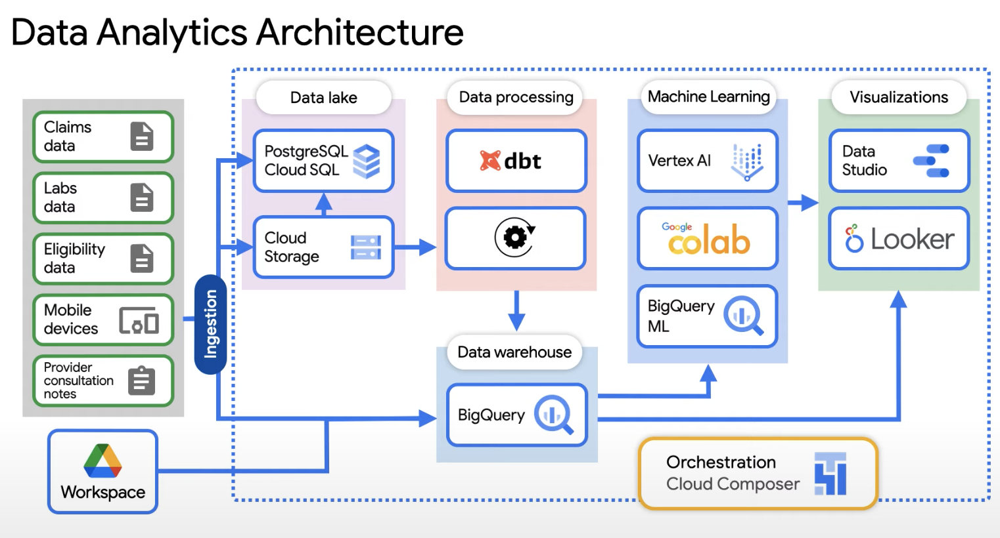provides comprehensive virtual care solution tailored to personalized health goals and preferences
what are the challenges in building such application
data coming from different sources of different types
needs to be integrated seemlessly
both for mobile and web users
Why Google cloud
50% cost reduction
developer productivity, one single place to look at
focus on AI/ML
Challenges with ML and AI
make provider more efficient at their jobs
use NLP and speech to text - take down notes for doctors/assistants
how to get more patients
depending on severity and acuity of patients
give signals to providers
prioritize such cases
Vidapedia - major recommendation platform - using Workspace and BigQuery. How does it work?
Vidapedia
set of protocols, as Google docs, written to help providers/clinicians
200 different protocols are created, not feasible to remember/memorize
how to get such information at high speed
Vidapedia recommendation system does on machine learning
look into patient-provider interaction going on
surface right protocol for such interaction
ML model detects and triggers particular protocol during or after the session
provider is able to give right care to patient
this was possible using Google Doc protocols interaction with Google Workspace
use this data, index them
store it in BigQuery
build ML tools on top of that
Data pipeline architecture
data comes from different sources
providers provide consultation notes
derive insights
data gets ingested both in relational and unstructured format
all these data is saved in BigQuery
which is then used in analytics application deriving insights
visualization tools such as data studio and looker
ml models are built which is then sourced into visualization tools
exploration in terms of VertexAI for quickly building these models and deploying them
Transformations
in past custom ETL pipelines were designed, which is a challenge
currently dbt is used for transformations
how is the orchestration done
Cloud Composer is used for orchestration the pipeline, scheduling all of this ingest, processing data, and running all the stuff
how is security requirement resolved
patient data is very sensitive
stringent privacy laws
use Google Data Loss Protection(DLP)
mask PII data
reduce surface area
what is the Web Architecture designed
SADA practices - well known in the industry
standard 3-tier architecture
load balancers at the front
deployed in Google Kubernetes engine
middle API layer that returns all the request response
at the end there is GCS Postgres database, scaling is easy
easy to scale
Web Architecture#
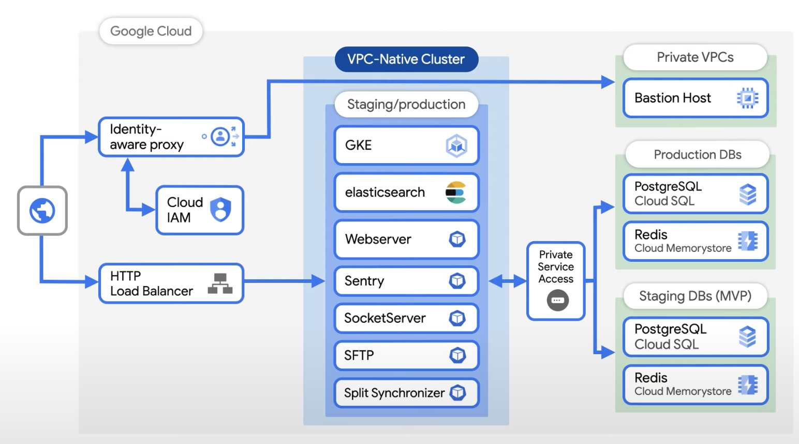What next
Google Cloud Healthcare API
provides managed solution for storing and accessing healthcare data in Google cloud
Google FHIR - Fast Healthcare Interoperability Resources
Explore and integrate google health services and api
How are the video monitoring system architectured - Arcules?#
How does Arcules work?#
Arcules takes information from multitude of IoT devices, captures it, processes it and then pushes it into the Google cloud
What is video security as a service?#
it is like a SaaS based product, that is storing videos. Its competitors are video management services(VMS)
the collected vides help finding incidences or people within video, all captured in cameras
What is the high level architecture#
the customers have a small appliance at the edge that allows buffering information before sending it to the cloud
it can be deployed inside of bare metal or VMware
Kubernetes allows deploying multiple containers
last mile piece - allows near zero latency
have 90 microservices in GKE
different types of load balancers are used as HTTP/HTTPS and endpoint connections, along with instances of L4 with WebRTC
also use IoT core, which is used for metadata that flows up through some the services at the edge, which gets fed into pub/sub, which then gets fed into BigQuery
What type of databases are used?#
different types of dbs are used
use cloud SQL, both Postgres and a bit of MySQL
graph database like Arango is used for NIST based permission graph, which makes permission way better for horizontally scaling
Singlestore is used for high rate of ingestion, with 400,000 inserts per second
Postgres is mostly used for device configuration storage
BigQuery is used for slow storage, which is powerful to run jobs across large datasets
Storing video chunks in cloud storage#
videos are stored today inside of custom container format H.264
every videos have keyframes
these keyframes are chunked up, depending on the camera, will be one, two or four second
these informations are aggregated up, so that no extra spending is required on PUT requests
all the messages fly through pub/sub
How are the CI/CD microservices deployed#
deployment is typically through Seneca, with build process through the cloud build platform
heavy users of container services for container management
CBS Interactive AI/ML Group#
Functional Infrastructure#
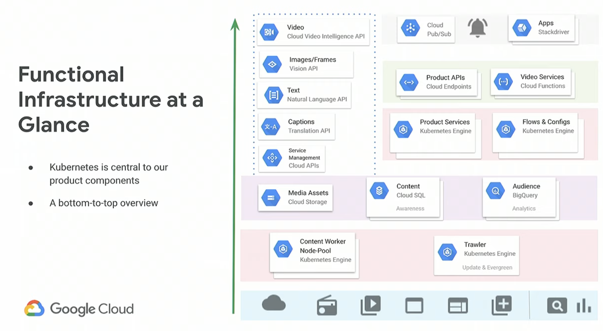Content Awareness Architecture#
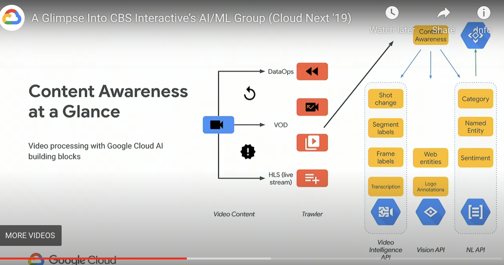Video Services#
the video narratives are broken down into
foreground information that drives the story forward
background information that provides the setting
Recommendations and Search#
goal - general purpose recommendations to brands with simple API interface
accomplished dynamically using Redis
recommendation combination at request time is fast
backend failures only result in delays in updating recommendations
these recommendation models must generate new recommendations without fear of breaking
the front end of these recommendation models must be distinctly different from the backend of already generated recommendations
applying business logic on one and not the other
goal is to serve the best recommendation at any given time
Google cloud endpoints play a crucial role in this
it handles authentication, monitoring as well as giving us a central place for API documentation
Admiral decides what recommendations are selected and what recommendations are returned
this is the only choke point for reliability
Admiral servees using JSON blobs
business logics can be easily changed in Admiral
The ingest process starts with Trawler, which sources data into the content awareness system
this is then augmented with Cloud AI APIs and store it
GenReco is three cron jobs, which is an auto-scaling worker service
Data collector sources data from content awareness system which is augmented with the output of the cloud AI APIs
it stores it in GenReco in a format that can be used
If every piece of compared against every other piece of content, it will be an intractable problem with lots of resources and many useless comparisons. GenReco submit helps in this
first step is a filter to identify based on some initial processing, content that is most likely to be recommended
they are then submitted as jobs to auto-scaling workers
these workers then compute the actual similarity metrics
they can then scale up when the content creation is high and scale down when no content is coming through
the last step is GenReco where the recommendations are actually created
all the comparisons are pulled that are computed by workers
generate the best recommendations of that particular time
the recommendations can have score, order, weight, interleaving
all this is required is to have models in Redis, which can be combined dynamically